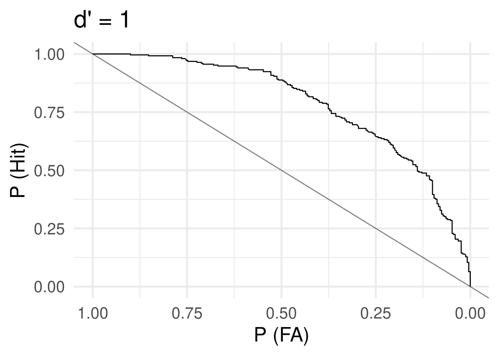
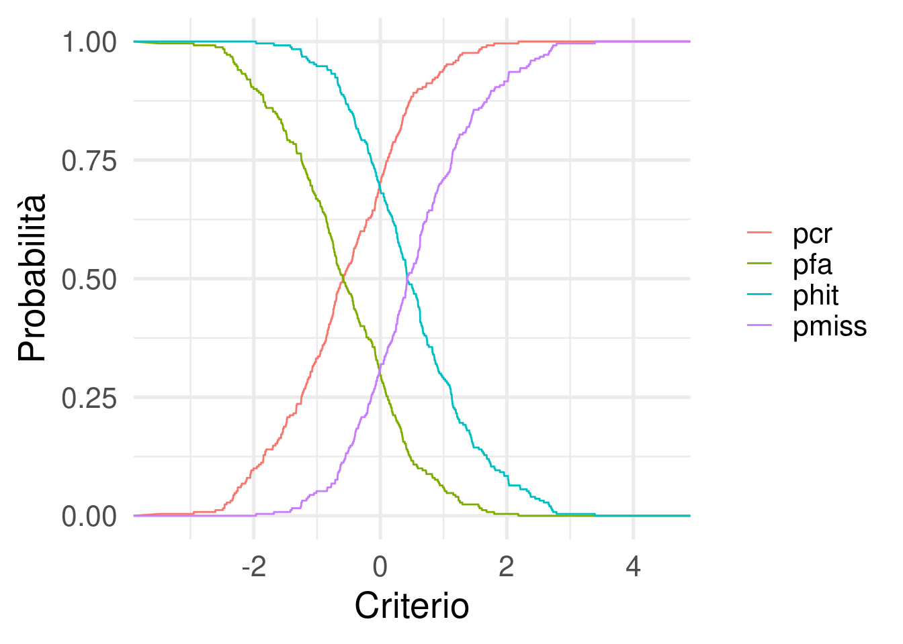

devtools::load_all()
library(tidyverse)
library(cowplot)
library(here)
mtheme <- function(){
theme_minimal(20)
}
theme_set(mtheme())
funs <- filor::get_funs(here("R", "utils-glm_phd.R"))Signal Detection Theory
Probit link
Probit link
- The mostly used link function when using a binomial GLM is the logit link. The probit link is another link function that can be used. The overall approach is the same between logit and probit models. The only difference is the parameter interpretation (i.e., no odds ratios) and the specific link function (and the inverse) to use.
- The probit model use the cumulative normal distribution but the actual difference with a logit functions is neglegible.
Probit link
Probit link
When using the probit link the parameters are interpreted as difference in z-scores associated with a unit increase in the predictors. In fact probabilities are mapped into z-scores using the cumulative normal distribution.
p1 <- 0.7
p2 <- 0.5
qlogis(c(p1, p2)) # log(odds(p1)), logit link[1] 0.8472979 0.0000000qnorm(c(p1, p2)) # probit link[1] 0.5244005 0.0000000log(odds_ratio(p1, p2)) # ~ beta1, logit link[1] 0.8472979pnorm(p1) - pnorm(p2) # ~beta1, probit link[1] 0.06657389Probit link
Signal Detection Theory
Il modello probit è utilizzato per stimare i parametri della signal detection theory.
Brevemente l’idea è quella di modellare decisioni binarie (o anche come rating) rispetto a come uno stimolo viene percepito ed elaborato internamente.
La teoria (nella sua versione di base) assume che uno stimolo (segnale) venga elaborato e l’informazione contenuta sostenga un qualche tipo di decisione su questo stimolo.
Ad esempio, immaginiamo di voler valutare la capacità di un radiologo di rilevare la presenza di un’anomalia in una radiografia. Possiamo immaginare di prendere 100 radiografie. 50 di queste contengono un’anomalia (signal trials) mentre 50 non la contengono (catch trials).
Per ogni radiografia, chiediamo ai radiologi di valutare se rilevano un’anomalia oppure no.
Incrociando lo stimolo (signal o catch) e la risposta (presente o assente) otteniamo una tipica tabella di contingenza 2x2, simile a quello che si ottiene nei test diagnostici.
| Segnale: Si | Segnale: No | |
|---|---|---|
| Risposta: Si | Hit (H) | False Alarm (FA) |
| Risposta: No | Miss (M) | Correct Rejection (CR) |
In questo tipo di classificazione solitamente è ottimale massimizzare gli Hit (o True Positive) e minimizzare i False Alarm (False Positive).
La teoria formalizza che le distribuzioni del segnale e del rumore sono delle Gaussiane standard. La distribuzione del rumore ha \(\mu = 0\) mentre la distribuzione del segnale ha \(\mu = d'\). In questo modo il parametro \(d'\) (pronunciato d-prime) rappresenta il grado di separazione tra segnale e rumore.
Una radiografia che contiene un segno chiaramente visibile avrà molta separazione tra le due distribuzioni mentre una radiografia con un segnale molto debole avrà più sovrapposizione.
Ora, questa rappresentazione interna del segnale e del rumore che dipende dal tipo di stimolo e dall’abilità del soggetto. Tuttavia noi non osserviamo direttamente questa variabile latente ma la riposta si/no del soggetto.
Il soggetto quindi, in base ad un qualche tipo di regola interna, decide di rispondere. La SDT formalizza questa regola interna come una soglia (criterio) che viene decisa internamente dal soggetto. Se in quel trial (radiografia) il segnale supera la soglia, il soggetto risponde Si, se non supera la soglia il soggetto risponde no.
Quindi con la stessa intensità del segnale \(d'\) soggetti diversi o lo stesso soggetto in condizioni diverse può avere un pattern di risposte diverse.
Ci sono alcuni punti importanti:
- qualcunque criterio si scelga (in condizioni plausibili) non è mai possibile annullare i falsi allarmi e massimizzare gli hit
- quando il criterio è nel mezzo tra le due distribuzioni (\(d'/2\)) viene definito unbiased
- quando il soggetto (a prescindere dal segnale) tende a dare più risposte si viene definito un criterio liberale
- quando il soggetto (a prescindere dal segnale) tende a dare più risposte no viene definito un criterio conservatore
Quindi, per ogni possibile criterio (assumendo di poterlo variare sperimentalmente) abbiamo una diversa tabella di contingenza. Se lo facciamo tante volte, otteniamo una curva:
Code
d <- 1
dat <- sim_sdt(1e3, d = d, 0.5)
mid <- d/2
cr <- c(-Inf, seq(mid - 4, mid + 4, 0.001), Inf)
res <- sdt(is_signal = dat$is_signal, x = dat$x, c = cr)
data.frame(res) |>
ggplot(aes(x = pfa, y = phit)) +
geom_line() +
ylim(c(0, 1)) +
scale_x_reverse(limits = c(1, 0)) +
geom_abline(slope = -1, col = alpha("black", 0.5)) +
xlab("P (FA)") +
ylab("P (Hit)") +
ggtitle("d' = 1")
Questa in altri contesti (come quello dei test diagnostici) viene chiamata curva di ROC. Infatti l’area under the curve (AUC) assumendo la normalità delle due distribuzioni è:
\[ \mbox{AUC} = \Phi(\frac{d'}{\sqrt{2}}) \] Quindi:
d <- 1 # dalla simulazione precedente
pnorm(1 / sqrt(2))[1] 0.7602499data.frame(res) |>
pivot_longer(c(phit, pfa, pmiss, pcr)) |>
ggplot(aes(x = c, y = value, color = name)) +
geom_line() +
theme(legend.title = element_blank()) +
xlab("Criterio") +
ylab("Probabilità")
Tornando all’esperimento delle radiografie, quello che osserviamo empiricamente è qualcosa di questo tipo (dati simulati usando sim_sdt()):
dat <- sim_sdt(100, 1, c = 0.5) |>
select(-x)
head(dat) say_signal is_signal
1 0 0
2 1 1
3 0 0
4 1 1
5 0 0
6 0 1Dove is_signal indica se la radiografia contiene il segnale o no e say_signal indica la risposta del soggetto.
In questo caso il \(d'\) è la distanza tra la distribuzione latente di segnale e rumore e \(c\) è il criterio di risposta.
cl <- sdt(is_signal = dat$is_signal, dat$say_signal)
cl$hit
[1] 12
$miss
[1] 13
$fa
[1] 4
$cr
[1] 21
$phit
[1] 0.48
$pfa
[1] 0.16
$pmiss
[1] 0.52
$pcr
[1] 0.84
$c
[1] NAPossiamo semplicemente calcolare la distanza tra le due distribuzioni, assumendo che siano gaussiane a varianza 1:
# dprime
qnorm(cl$phit) - qnorm(cl$pfa)[1] 0.9443043# criterio
-(qnorm(cl$phit) + qnorm(cl$pfa)) / 2 # - perchè per convenzione c negativo = liberale, c positivo = conservatore[1] 0.5223057Gli stessi parametri possono essere stimati con un glm binomiale con link function probit. Infatti il criterio è il punto di mezzo tra signal e noise mentre il \(d'\) non è altro che la distanza tra le due distribuzioni (di segnale e rumore).
Se facciamo un modello predicendo le risposte (binarie) con il tipo di trial (binario) otteniamo esattamente questi parametri.
dat$say_signal01 <- as.integer(as.character(dat$say_signal))
fit <- glm(say_signal01 ~ is_signal, data = dat, family = binomial(link = "probit"))
summary(fit)
Call:
glm(formula = say_signal01 ~ is_signal, family = binomial(link = "probit"),
data = dat)
Coefficients:
Estimate Std. Error z value Pr(>|z|)
(Intercept) -0.05015 0.25078 -0.200 0.841
is_signal0 -0.94430 0.39204 -2.409 0.016 *
---
Signif. codes: 0 '***' 0.001 '**' 0.01 '*' 0.05 '.' 0.1 ' ' 1
(Dispersion parameter for binomial family taken to be 1)
Null deviance: 62.687 on 49 degrees of freedom
Residual deviance: 56.601 on 48 degrees of freedom
AIC: 60.601
Number of Fisher Scoring iterations: 3L’intercetta è la probabilità (in \(z\) scores) di rispondere Si quando il segnale è 0 (catch). Quindi è la probabilità di fare falsi allarmi.
La slope è la distanza (in \(z\) scores) tra i trial con il segnale e con il rumore che è esattamente il concetto di \(d'\). Cambia solo il segno rispetto a quello calcolato manualmente.
Per calcolare anche il criterio nel modo convenzionale è sufficiente centrare il predittore is_signal:
fit <- glm(say_signal01 ~ is_signal,
data = dat,
contrasts = list(is_signal = contr.sum(2)/2), # -0.5, 0.5
family = binomial(link = "probit"))
summary(fit)
Call:
glm(formula = say_signal01 ~ is_signal, family = binomial(link = "probit"),
data = dat, contrasts = list(is_signal = contr.sum(2)/2))
Coefficients:
Estimate Std. Error z value Pr(>|z|)
(Intercept) -0.5223 0.1960 -2.665 0.00771 **
is_signal1 0.9443 0.3920 2.409 0.01601 *
---
Signif. codes: 0 '***' 0.001 '**' 0.01 '*' 0.05 '.' 0.1 ' ' 1
(Dispersion parameter for binomial family taken to be 1)
Null deviance: 62.687 on 49 degrees of freedom
Residual deviance: 56.601 on 48 degrees of freedom
AIC: 60.601
Number of Fisher Scoring iterations: 3Attenzione che per come è parametrizzato, il criterio ha il segno opposto rispetto a quello convenzionale.
Il vantaggio è che possiamo inserire dei predittori sia per il criterio che per il \(d'\). Ad esempio, immaginiamo che ci siano 100 radiografie che indagano un’ipotetica condizione a bassa mortalità vs una condizione ad alta mortalità. Potremmo immaginare che in funzione dell’incentivo decisionale lo stile di risposta possa cambiare (da più a meno conservativo/liberale).
say_signal is_signal x cond
1 0 0 -1.0198272 low
2 1 1 1.3471905 low
3 1 0 0.6164624 low
4 1 1 0.4093837 low
5 0 0 -1.1217480 low
6 1 1 0.3081716 lowfit_low <- glm(say_signal ~ is_signal,
subset = cond == "low",
contrasts = list(is_signal = -contr.sum(2)/2),
data = dat,
family = binomial(link = "probit"))
fit_high <- glm(say_signal ~ is_signal,
subset = cond == "high",
contrasts = list(is_signal = -contr.sum(2)/2),
data = dat,
family = binomial(link = "probit"))
fit <- glm(say_signal ~ is_signal * cond,
contrasts = list(is_signal = -contr.sum(2)/2),
data = dat,
family = binomial(link = "probit"))
car::compareCoefs(fit_low, fit_high, fit)Calls:
1: glm(formula = say_signal ~ is_signal, family = binomial(link = "probit"),
data = dat, subset = cond == "low", contrasts = list(is_signal =
-contr.sum(2)/2))
2: glm(formula = say_signal ~ is_signal, family = binomial(link = "probit"),
data = dat, subset = cond == "high", contrasts = list(is_signal =
-contr.sum(2)/2))
3: glm(formula = say_signal ~ is_signal * cond, family = binomial(link =
"probit"), data = dat, contrasts = list(is_signal = -contr.sum(2)/2))
Model 1 Model 2 Model 3
(Intercept) -0.5246 0.4992 0.4992
SE 0.0197 0.0197 0.0197
is_signal1 1.0031 1.0405 1.0405
SE 0.0395 0.0394 0.0394
condlow -1.0238
SE 0.0279
is_signal1:condlow -0.0374
SE 0.0558
library(multcomp)
glht(fit,
linfct = c(
"-(Intercept) == 0",
# criterion low
"-(Intercept) + condlow == 0",
# dprime condition high
"is_signal1 == 0",
# dprime condition low
"is_signal1 + is_signal1:condlow == 0",
# difference between criterion
"condlow == 0",
# difference between dprime
"is_signal1:condlow == 0"
)
) |> summary()
Simultaneous Tests for General Linear Hypotheses
Fit: glm(formula = say_signal ~ is_signal * cond, family = binomial(link = "probit"),
data = dat, contrasts = list(is_signal = -contr.sum(2)/2))
Linear Hypotheses:
Estimate Std. Error z value Pr(>|z|)
-(Intercept) == 0 -0.49919 0.01971 -25.325 <1e-05 ***
-(Intercept) + condlow == 0 -1.52300 0.04409 -34.544 <1e-05 ***
is_signal1 == 0 1.04048 0.03942 26.394 <1e-05 ***
is_signal1 + is_signal1:condlow == 0 1.00313 0.03948 25.406 <1e-05 ***
condlow == 0 -1.02381 0.02790 -36.699 <1e-05 ***
is_signal1:condlow == 0 -0.03735 0.05579 -0.669 0.928
---
Signif. codes: 0 '***' 0.001 '**' 0.01 '*' 0.05 '.' 0.1 ' ' 1
(Adjusted p values reported -- single-step method)Infine, un aspetto interessante è che in qualunque caso, il criterio unbiased è quello che massimizza l’accuratezza intesa come HIT + CR.
dat <- sim_sdt(1e4, 1, 0)
cr <- seq(-3, 3, 0.1)
res <- sdt(dat$is_signal, x = dat$x, c = cr)
res <- data.frame(res)
res |>
mutate(acc = 0.5 * (phit + pcr)) |>
ggplot(aes(x = c, y = acc)) +
geom_line() +
xlab("Criterio") +
ylab("pCR + pHIT")Per tutti gli esempi ho simulato i dati usando due funzioni custom:
sim_sdt <- function(nt, d, c = 0, ps = 0.5, sr = 1){
ns <- floor(ps * nt)
nn <- nt - ns
is_signal <- rep(c(0, 1), nn, ns)
x <- ifelse(is_signal == 1, rnorm(ns, d/2, sr), rnorm(nn, -d/2, 1))
say_signal <- ifelse(x > c, 1, 0)
is_signal <- factor(is_signal, levels = c(1,0))
say_signal <- factor(say_signal, levels = c(1,0))
data.frame(say_signal, is_signal, x)
}
sdt <- function(is_signal, say_signal = NULL, x = NULL, c = NULL){
if(is.null(say_signal)){
say_signal <- lapply(c, function(ci) ifelse(x > ci, 1, 0))
}else{
say_signal <- list(say_signal)
c <- NA
}
hit <- miss <- fa <- cr <- rep(0, length(c))
for(i in 1:length(c)){
hit[i] <- sum(is_signal == 1 & say_signal[[i]] == 1)
miss[i] <- sum(is_signal == 1 & say_signal[[i]] == 0)
fa[i] <- sum(is_signal == 0 & say_signal[[i]] == 1)
cr[i] <- sum(is_signal == 0 & say_signal[[i]] == 0)
}
list(hit = hit,
miss = miss,
fa = fa,
cr = cr,
phit = hit / (hit + miss),
pfa = fa / (fa + cr),
pmiss = miss / (miss + hit),
pcr = cr / (cr + fa),
c = c)
}Esempio con dati veri
Partendo da questo tutorial https://vuorre.com/posts/sdt-regression/index.html usiamo il dataset data/sdt-example.rds.
dat <- readRDS(here("data", "sdt-example.rds"))
head(dat)# A tibble: 6 × 4
pid trial stimulus response
<fct> <int> <fct> <fct>
1 1 1 Old New
2 1 2 Old New
3 1 3 Old New
4 1 4 Old New
5 1 5 Old New
6 1 6 Old New - per ogni soggetto calcoliamo i parametri di SDT (Hit, FA, etc.)
- calcoliamo manualmente \(d'\) e criterio con il pacchetto
psycho::dprime() - fittiamo un modello probit multilivello per stimare i parametri e confrontiamoli